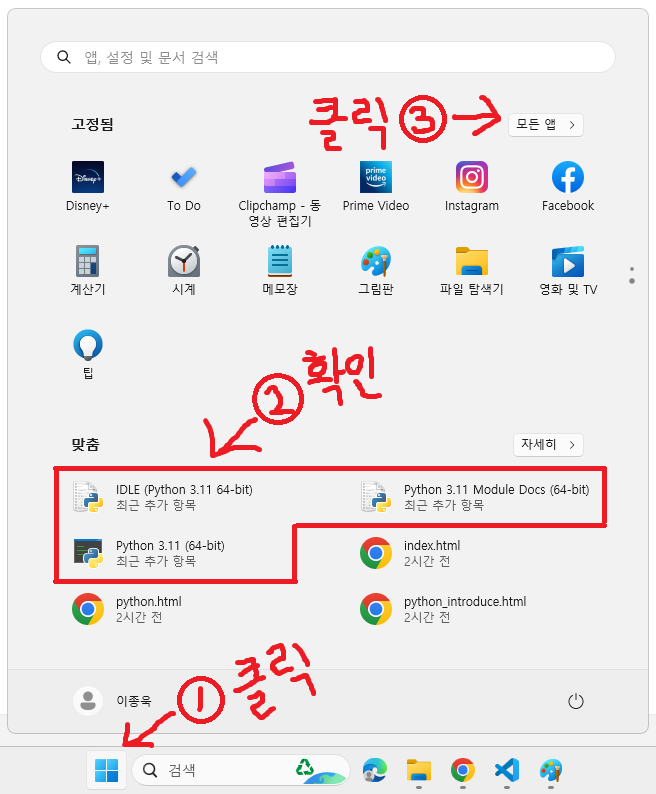

파이썬으로 프로그래밍하기 위해서는 파이썬을 설치해야 합니다.
파이썬 공식 홈페이지(https://www.python.org/)에 접속합니다.
접속하면 위와 같은 화면이 나오는데 마우스 커서를 ① 표시된 'Downloads'로 가져갑니다.
그러면 아래로 메뉴가 나타나는데 ② 표시된 Python 3.x.x 버튼을 클릭합니다.
그러면 윈도우 운영체제에 설치할 수 있는 파이썬 최신 버전이 다운로드됩니다.
다운로드가 완료되면 브라우저에 나타난 파일 이름을 클릭하거나
파일 탐색기의 Downloads 폴더에서 해당 파일을 실행합니다.
실행하면 위와 같은 창이 나타나는데
먼저 아래에 있는 'Add python.exe to PATH'에 체크를 해줍니다.
그리고 나서 'Install Now'를 클릭합니다.
그러면 '사용자 계정 컨트롤' 창이 나타납니다.
이 앱이 디바이스를 변경할 수 있도록 허용하시겠어요? 라고 나오는데
'예'를 클릭합니다.
설치가 진행되고 이후 설치가 완료되면 'Close' 버튼을 누릅니다.
다음은 설치된 내용을 확인해보겠습니다(윈도우 11 기준).

① 시작 버튼을 누릅니다.
② '맞춤' 란에 설치된 파일이 보입니다.
③ 시작 메뉴 위에 '모든 앱 >'을 클릭합니다.
스크롤을 'P'가 있는 곳으로 내리면 위와 같이 설치된 모습을 볼 수 있습니다.
이상으로 설치를 마칩니다.